감정평가사-1차-2교시 (2011-07-03 기출문제)
1과목: 감정평가관계법규
1. 자산의 측정 및 평가에 관한 설명으로 옳지 않은 것은?
- 역사적원가로 자산을 평가하는 경우 미실현이익을 인식하지 않는다.
- 현행원가로 자산을 평가하는 경우 실물자본유지개념에 적합하다.
- 현행유출가치는 청산가치의 측정척도가 된다.
- 자산을 공정가치로 평가하면 역사적원가로 평가하는 경우보다 회계이익이 과대계상될 수 있다.
- 현금흐름할인가치는 자산의 정의에 가장 충실한 측정기준이지만 실질가치를 반영하지 못한다.
(정답률: 알수없음)

2. 재무제표에 관한 설명으로 옳지 않은 것은?
- 기업이 경영활동을 청산 또는 중단할 의도가 있거나, 경영활동을 계속할 수 없는 상황에 처한 경우를 제외하고는 계속기업을 가정하여 재무제표를 작성해야 한다.
- 상이한 성격이나 기능을 가진 항목은 구분하여 표시하되 중요하지 않은 항목은 성격이나 기능이 유사한 항목과 통합하여 표시할 수 있다.
- 일반적으로 재무제표는 일관성 있게 1년 단위로 작성하여야 하나, 실무적인 이유로 52주의 보고기간을 적용할 수도 있다.
- 재무제표의 기간별 비교가능성을 제고하기 위하여 재무보고를 할 때 전기와 당기를 비교하는 형식으로 보고해야 한다.
- 계속기업의 가정이 적절한지의 여부를 평가할 때 경영진은 적어도 보고기간말로부터 향후 6개월 기간에 대하여 이용가능한 모든 정보를 고려해야 한다.
(정답률: 알수없음)
3. (주)서울은 현재의 신용등급으로 만기 3년, 표시이자율 연 12%, 액면금액 ￦1,000,000의 일반사채를 액면발행할 수 있다. (주)서울은 20×1년 1월 1일에 만기 3년, 표시이자율 연 8%, 액면금액 ￦1,000,000의 비분리형 신주인수권부사채를 액면발행하였다. 동 신주인수권부사채는 상환할증금이 없으며, 이자는 매년 말 지급된다. 신주인수권의 행사가격은 ￦25,000, 행사비율은 100%이며, 각 신주인수권은 액면금액이 ￦5,000인 보통주 1주를 매입할 수 있다. 신주인수권의 공정가치는?(단, 현가계수는 다음과 같음)
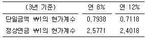
- ￦96,⑤6
- ￦98,065
- ￦100,092
- ￦110,029
- ￦120,092
(정답률: 알수없음)
4. (주)서울의 20×1년 1월 1일 유통보통주식수는 2,000주이며, 연 10% 배당을 지급하는 비누적적ㆍ비참가적우선주 1,000주가 유통되고 있다. 20×1년 10월 1일에 보통주 500주를 추가로 발행하였다. (주)서울의 보통주와 우선주의 주당액면가액은 각각 ￦5,000이다. (주)서울의 20×1년 당기순이익이 ￦8,000,000일 경우, 기본주당순이익은? (단, 가중평균유통보통주식수는 월할로 계산함)
- ￦2,125
- ￦2,250
- ￦3,333
- ￦3,529
- ￦4,375
(정답률: 알수없음)
5. (주)서울의 20×9년 당기순이익은 ￦1,500,000이다. 다음 자료를 이용하여 (주)서울의 20×9년 영업활동현금흐름을 계산하면? (단, 영업활동현금흐름은 간접법으로 계산할 것)
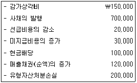
- ￦1,780,000
- ￦1,820,000
- ￦1,860,000
- ￦1,920,000
- ￦1,960,000
(정답률: 알수없음)
6. 다음 자료를 기초로 (주)서울의 포괄손익계산서에 계상될 퇴직급여비용을 계산하면?
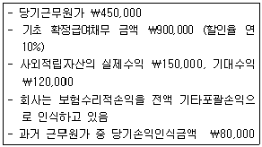
- ￦424,000
- ￦444,000
- ￦450,000
- ￦494,200
- ￦500,000
(정답률: 알수없음)
7. 리스이용자인 (주)서울은 20×0년 12월 31일에 다음과 같은 금융리스계약을 체결하였다.
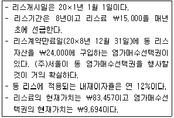
20×1년 12월 31일 (주)서울의 재무상태표에 보고되는 금융리스부채의 잔액은?
- ￦60,242
- ￦72,529
- ￦73,442
- ￦78,151
- ￦89,329
(정답률: 알수없음)
8. 용역의 제공에 따른 수익인식기준에 관한 설명으로 옳지 않은 것은?
- 광고제작수수료는 진행기준에 따라 수익을 인식한다.
- 하나의 공연입장권으로 여러 행사에 참여할 수 있는 경우에는 각각 행사를 위한 용역 수행정도에 따라 각 행사에 배분하여 수익을 인식한다.
- 학원수강료는 강의기간에 걸쳐 수익으로 인식한다.
- 창업운영지원용역의 제공에 대한 수수료는 수취시점에서 수익으로 인식한다.
- 회원이 회비를 납부하고 회원가입기간 동안 재화나 용역을 비회원보다 저렴한 가격으로 구매할 수 있는 경우에는 이 효익이 제공되는 시기, 성격 및 가치를 반영하는 기준으로 수익을 인식한다.
(정답률: 알수없음)
9. (주)서울은 20×1년 초 기계장치를 ￦2,000,000에 취득하였다. 동 기계장치의 내용연수는 10년이고 잔존가치는 ￦200,000이며, 정액법으로 감가상각한다. 20×2년 말 순공정가치가 ￦800,000(사용가치 ￦900,000)으로 급격히 하락하여, (주)서울은 동 기계장치를 손상처리하였다. (주)서울이 원가모형을 채택하는 경우, 20×2년의 유형자산 손상차손액을 계산하면?
- ￦640,000
- ￦740,000
- ￦840,000
- ￦880,000
- ￦900,000
(정답률: 알수없음)
10. 기능통화에 의한 외화거래의 인식 및 측정으로 옳지 않은 것은?
- 기능통화로 외화거래를 최초로 인식하는 경우에 거래일의 외화와 기능통화 사이의 현물환율을 외화금액에 적용하여 기록한다.
- 거래일은 거래의 인식조건을 최초로 충족하는 날이다. 실무적으로는 거래일의 실제 환율에 근접한 환율을 자주 사용한다.
- 공정가치로 측정하는 비화폐성 외화항목은 평균환율로 환산한다.
- 역사적원가로 측정하는 비화폐성 외화항목은 거래일의 환율로 환산한다.
- 비화폐성항목에서 생긴 손익을 기타포괄손익으로 인식하는 경우에 그 손익에 포함된 환율변동효과도 기타포괄손익으로 인식한다.
(정답률: 알수없음)
11. (주)서울은 20×0년 상반기에 건설계약(총 계약금액 ￦24,000,000)을 수주하여 20×1년 중에 완료하였으며 동 건설계약에 대하여 진행기준을 적용하여 수익을 인식하였다. 동 계약에 대한 추가적인 자료는 다음과 같다.
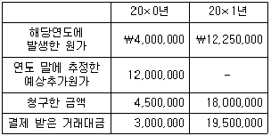
(주)서울이 동 건설계약에 관하여 20×1년에 인식할 이익은?
- ￦2,000,000
- ￦5,750,000
- ￦7,750,000
- ￦8,000,000
- ￦9,750,000
(정답률: 알수없음)
12. 다음은 20×1년 말 (주)서울의 퇴직급여에 관한 자료이다.
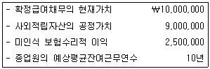
(주)서울이 보험수리적손익을 범위접근법방식에 따라 최소한만 인식한다고 할 때, 20×2년에 인식할 보험수리적이익은?
- ￦150,000
- ￦160,000
- ￦200,000
- ￦250,000
- ￦260,000
(정답률: 알수없음)
13. (주)서울은 20×1년 1월 1일 (주)한국의 보통주 30%를 ￦3,000,000에 취득한 후 지분법을 적용하여 회계처리하고 있다. 취득시점에서 (주)한국의 순자산 장부금액과 공정가치는 ￦10,000,000으로 동일하다. (주)한국의 연도별 당기순손익과 현금배당 지급액은 다음과 같다.
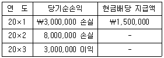
(주)서울이 20×3년에 인식할 지분법이익은?
- ￦100,000
- ￦150,000
- ￦300,000
- ￦750,000
- ￦900,000
(정답률: 알수없음)
14. 다음 거래들 중에서 부채비율(=부채/자본)을 높이는 것만을 모두 고른 것은?
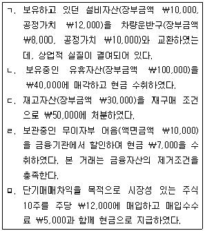
- ㄷ
- ㄷ, ㄹ
- ㄱ, ㄴ, ㄷ, ㄹ
- ㄴ, ㄷ, ㄹ, ㅁ
- ㄱ, ㄴ, ㄷ, ㄹ, ㅁ
(정답률: 알수없음)
15. (주)서울은 20×1년 7월 1일에 액면금액이 ￦100,000인 상품권 1,000매를 한 매당 ￦95,000에 발행하였다. 고객은 상품권 금액의 80%이상을 사용하면 잔액을 현금으로 돌려받을 수 있다. 상품권의 만기는 발행일로부터 5년이다. 20×1년 12월 31일까지 상품권 사용에 의한 매출로 200매가 회수되었으며, 그 매출과정에서 ￦2,500,000이 거스름돈으로 지급되었다. 20×1년에 (주)서울이 상품권과 관련하여 수익(순매출액)으로 인식할 금액은?
- ￦6,500,000
- ￦17,500,000
- ￦19,000,000
- ￦20,000,000
- ￦95,000,000
(정답률: 알수없음)
16. (주)서울의 20×1년과 20×2년 결산 마감 후 매출원가는 다음과 같다.
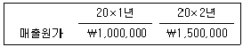
20×3년에 (주)서울의 회계담당자는 20×0년 말 재고자산이 ￦200,000 과소계상 되었고, 20×1년 말 재고자산이 ￦100,000 과소계상 되었음을 알게 되었으며, 동 오류에 대해서 어떠한 수정도 없었음을 확인하였다. 동 오류가 재무제표에 미치는 영향으로 옳지 않은 것은?
- (주)서울의 20×1년 말 재무상태표상 이익잉여금은 ￦100,000만큼 과소계상되어 있다.
- (주)서울의 20×2년 포괄손익계산서상 당기순이익이 ￦3,000,000이었다면, 20×2년의 정확한 당기순이익은 ￦2,900,000이다.
- (주)서울의 20×1년의 오류수정 후 매출원가는 ￦900,000이다.
- (주)서울의 20×2년 말 재무상태표상 이익잉여금은 적정하게 계상되어 있다.
- (주)서울의 20×2년의 오류수정 후 매출원가는 ￦1,600,000이다.
(정답률: 알수없음)
17. (주)서울농장은 20×1년 1월 1일에 1년된 돼지 10마리를 보유하고 있다. (주)서울농장은 20×1년 7월 1일에 1.5년된 돼지 5마리를 한 마리당 ￦100,000에 매입하였고, 20×1년 7월 1일에 돼지 6마리가 태어났다. 돼지의 일자별 한 마리당 순공정가치가 다음과 같을 때 (주)서울농장이 동 생물자산과 관련하여 20×1년도 포괄손익계산서의 당기손익에 반영할 평가이익은? (단, 20×1년 중 매각되거나 폐사된 돼지는 없다고 가정함)
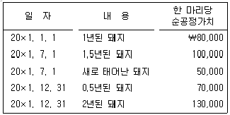
- ￦300,000
- ￦650,000
- ￦1,070,000
- ￦1,430,000
- ￦1,950,000
(정답률: 알수없음)
18. 회계변경에 관한 설명으로 옳지 않은 것은?
- 기업이 하나의 일반적으로 인정된 회계원칙(GAAP)에서 다른 회계원칙(GAAP)으로 바꾸는 것을 회계정책의 변경이라 한다.
- 감가상각자산의 내용연수 또는 감가상각에 내재된 미래 경제적효익의 기대소비행태가 변하는 경우 회계정책의 변경으로 처리한다.
- 회계정책의 변경을 반영한 재무제표가 특정 거래, 기타 사건 또는 상황이 재무상태, 경영성과 또는 현금흐름에 미치는 영향에 대해서 신뢰성 있고 더 목적적합한 정보를 제공하는 경우 회계정책의 변경이 가능하다.
- 회계정책의 변경에 대해서는 소급법을 적용하여 재무제표를 작성한다.
- 회계정책의 변경과 회계추정의 변경을 구분하는 것이 어려운 경우에는 이를 회계추정의 변경으로 본다.
(정답률: 알수없음)
19. (주)서울은 영업활동에 필요한 유형자산 취득과 관련하여 다음의 항목을 지출하였다. 토지의 취득원가는? (단, 관련 시설의 유지 및 보수는 (주)서울의 책임임)
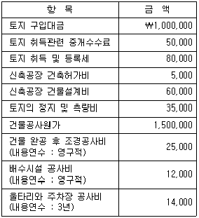
- ￦1,202,000
- ￦1,216,000
- ￦1,322,000
- ￦1,350,000
- ￦1,364,000
(정답률: 알수없음)
20. 20×6년 1월 1일 (주)서울은 산업합리화 정책의 일환으로 설비자금의 일부를 정부에서 지원받았다. 설비의 취득원가는 ￦500,000이고 정부보조금은 ￦200,000으로 설비취득일에 전액 수령하였다. 동 설비의 내용연수는 5년, 잔존가액은 ￦20,000이며 정액법으로 감가상각한다. (주)서울이 동 설비를 20×9년 1월 1일 ￦150,000에 처분하였을 경우 유형자산처분손익은? (단, 동 설비에 대하여 원가모형을 적용하고 있음, 위의 정부보조금은 상환의무가 없으며 관련자산을 차감하는 방법으로 회계처리함)
- ￦18,000 이익
- ￦18,000 손실
- ￦62,000 이익
- ￦62,000 손실
- ￦92,000 이익
(정답률: 알수없음)
21. 리스 회계처리에 관한 설명으로 옳지 않은 것은?
- 리스약정일은 리스계약일과 리스의 주요사항에 대한 계약당사자들의 합의일 중 이른 날이다.
- 리스기간개시일은 리스이용자가 리스자산의 사용권을 행사할 수 있게 된 날로 리스자산의 최초인식일이 된다.
- 리스기간 중에 리스자산의 소유권이 리스이용자에게 이전되는 경우에는 금융리스로 분류한다.
- 리스의 분류는 리스기간개시일을 기준으로 결정한다.
- 리스기간은 리스이용자가 자산을 리스하기로 약정을 맺은 해지불능기간과 리스이용자가 리스를 연장할 수 있는 선택권을 가지고 있으며, 리스이용자가 그 선택권을 행사할 것이 리스약정일 현재 거의 확실한 경우 그 추가기간을 포함한다.
(정답률: 알수없음)
22. (주)서울은 투자부동산에 대하여는 공정가치모형을, 유형자산에 대하여는 재평가모형을 사용하여 후속측정을 하고 있다. 다음의 자료에 의하여 20×2년에 후속측정과 관련하여 당기손익과 기타포괄손익으로 계상할 금액은?
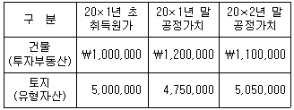
- ￦50,000 손실 ￦0
- ￦150,000 이익 ￦50,000 손실
- ￦150,000 이익 ￦50,000 이익
- ￦200,000 이익 ￦0
- ￦100,000 이익 ￦50,000 손실
(정답률: 알수없음)
23. (주)서울은 20×1년 초에 기계장치(취득원가 ￦100,000, 감가상각누계액 ￦20,000)를 다음과 같은 조건(ㄱ, ㄴ, ㄷ) 가운데 하나로 (주)한국의 유형자산과 교환하였다. (주)서울의 입장에서 유형자산처분이익이 높은 순서로 배열된 것은? (단, 각 거래는 독립적인 상황으로 가정함)
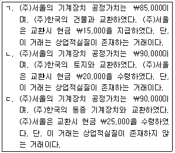
- ㄱ > ㄴ > ㄷ
- ㄱ > ㄷ > ㄴ
- ㄴ > ㄱ > ㄷ
- ㄴ > ㄷ > ㄱ
- ㄷ > ㄴ > ㄱ
(정답률: 알수없음)
24. (주)서울은 20×1년 1월 1일에 영업사원 200명에게 각각 주식선택권 100개를 부여하였다. 각 주식선택권은 종업원이 앞으로 4년간 근무할 것을 조건으로 한다. 부여일 현재 주식선택권의 단위당 공정가치는 ￦5,000으로 추정되었다. (주)서울은 종업원 중 30%가 4년 이내에 퇴사하여 주식선택권을 상실할 것으로 추정하였고, 실제로 20×1년과 20×2년에 각각 15명이 퇴사하였다. 동 주식선택권과 관련하여 (주)서울의 20×2년 포괄손익계산서상 당기손익에 반영될 주식보상비용은?
- ￦12,500,000
- ￦15,500,000
- ￦17,500,000
- ￦19,500,000
- ￦21,500,000
(정답률: 알수없음)
25. (주)서울은 20×1년 초에 (주)한국을 흡수합병하기로 하고 (주)한국의 주주들에게 ￦55,000,000을 지급하였다. 합병시점에서 (주)한국의 식별가능한 자산과 부채의 장부금액 및 공정가치는 다음과 같다.
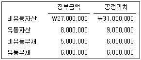
이 합병을 통해 (주)서울이 인식할 영업권은?
- ￦0
- ￦3,000,000
- ￦4,000,000
- ￦27,000,000
- ￦31,000,000
(정답률: 알수없음)
26. 다음은 (주)서울의 재무제표에서 발췌한 자료이다.
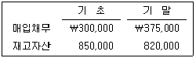
이 기간 중 매출원가가 ￦1,155,000일 경우, (주)서울이 재고자산 매입을 위해 공급자에게 지급한 현금은? (단, 재고자산 매입거래는 모두 외상매입이며 재고자산 평가손익과 감모손실은 없음)
- ￦1,⑤0,000
- ￦1,080,000
- ￦1,120,000
- ￦1,155,000
- ￦1,260,000
(정답률: 알수없음)
27. (주)서울은 20×7년 1월 1일 액면금액 ￦10,000, 표시이자율 연 12%(이자는 매년 말 지급), 유효이자율 연 10%, 3년 만기, 수의상환사채를 ￦10,500에 발행하였다. (주)서울은 수의상환선택권을 행사하여 20×9년 1월 1일 동 사채 전체를 ￦10,300에 상환하였다. 이 거래와 관련하여 (주)서울이 인식할 사채상환손익은?
- ￦115 손실
- ￦115 이익
- ￦315 손실
- ￦315 이익
- ￦200 손실
(정답률: 알수없음)
28. 포괄손익계산서에 구분하여 표시하지 않아도 되는 항목은?
- 금융원가
- 법인세비용
- 감가상각비용
- 세후 중단영업손익
- 지분법 적용대상인 관계기업의 당기순손익에 대한 지분
(정답률: 알수없음)
29. (주)서울은 20×1년 1월 1일 현재 다음과 같이 단기매매금융자산과 매도가능금융자산으로 분류되는 지분상품을 보유하고 있다.
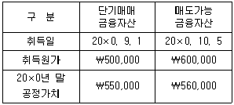
자금난의 해소를 위하여 (주)서울이 20×1년 4월 1일에 동 단기매매금융자산과 매도가능금융자산 전부를 각각 ￦600,000과 ￦580,000에 처분하였다면, 이 거래로 인하여 (주)서울이 20×1년 당기손익에 반영할 금액은? (단, 손상징후는 없음)
- ￦20,000 손실
- ￦30,000 이익
- ￦40,000 손실
- ￦50,000 이익
- ￦60,000 이익
(정답률: 알수없음)
30. (주)서울은 20×1년 1월 1일 자금조달을 목적으로 액면금액이 ￦500,000인 사채(액면이자 ￦40,000 매년 말 지급, 시장이자율 연 10%, 3년 만기)를 ￦475,122에 발행하였으며, 동 사채를 동 일자에 (주)한국이 발행금액에 취득하고 만기보유금융자산으로 분류하여 회계처리하였다. (주)한국은 20×1년 12월 31일 보유목적 등의 변화로 인하여 동 만기보유금융자산을 매도가능금융자산으로 분류변경하였다. 한편 20×1년 말 시장이자율이 연 12%로 상승하였으며, 20×1년 말과 20×2년 말 동 자산의 공정가치는 다음과 같다.
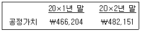
(주)한국이 동 자산과 관련하여 20×1년 포괄손익계산서에 인식할 평가손실과 20×2년 포괄손익계산서에 인식할 이자수익은? (단, 발행 및 취득과 관련하여 거래비용은 발생하지 않았다고 가정, 최초인식 및 분류변경 또한 적절하였다고 가정, 현가계수는 다음과 같음)
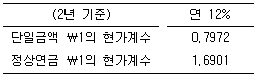
- ￦8,918 ￦47,512
- ￦13,253 ￦47,512
- ￦13,253 ￦48,263
- ￦16,430 ￦48,263
- ￦16,430 ￦57,916
(정답률: 알수없음)
31. (주)서울은 두 종류의 제품(컴퓨터와 프린터)을 생산하고 있다. 회사의 제조활동은 다음 4가지로 구분되며, 활동별 제조간접원가와 관련된 자료는 다음과 같다.
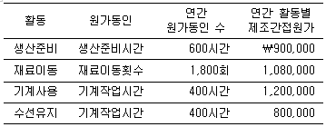
컴퓨터에 대한 생산량 및 원가자료가 다음과 같을 때, 활동기준원가계산(ABC)에 의한 컴퓨터의 단위당 제조원가는?
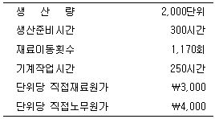
- ￦7,562
- ￦8,201
- ￦8,932
- ￦9,653
- ￦10,⑤2
(정답률: 알수없음)
32. (주)서울의 20×1년 단위당 변동비는 ￦4.2, 공헌이익률은 30%, 매출액은 ￦1,200,000이다. (주)서울은 20×1년에 이익도 손실도 보지 않았다. (주)서울은 20×2년에 20×1년보다 100,000단위를 더 판매하려고 한다. (주)서울의 20×2년 단위당 판매가격과 단위당 변동비는 20×1년과 동일하다. (주)서울이 20×2년에 ￦30,000의 목표이익을 달성하고자 한다면, 추가로 최대한 지출할 수 있는 고정비는?
- ￦50,000
- ￦75,000
- ￦100,000
- ￦125,000
- ￦150,000
(정답률: 알수없음)
33. (주)서울은 단일제품을 생산ㆍ판매하고 있다. 20×1년 생산량은 500단위이고 판매량은 300단위이며, 원가자료는 다음과 같다.
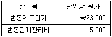
연간 고정제조간접원가는 ￦1,000,000이고 고정판매관리비는 ￦500,000이라면, 당기의 전부원가계산에 의한 영업이익과 변동원가계산에 의한 영업이익의 차이는? (단, 기초재고수량은 없으며, 단위당 판매가격은 ￦50,000임)
- ￦200,000
- ￦400,000
- ￦500,000
- ￦700,000
- ￦900,000
(정답률: 알수없음)
34. (주)서울은 제1공정에서 제품A와 B를 생산하고 있으며 20×1년 생산량 및 원가자료는 다음과 같다.
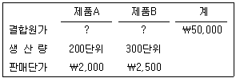
제품A는 제2공정에서 제품C 200단위(판매단가 ￦3,000)로 추가 가공할 수 있다. 제품A를 추가 가공하는데 소요된 원가는 ￦200,000이다. 제품A의 판매비는 ￦150,000이고, 제품C의 판매비는 ￦100,000이다. 제품A를 모두 제품C로 추가 가공하여 판매하는 경우 이익은 얼마나 증가하는가?
- ￦10,000
- ￦20,000
- ￦30,000
- ￦40,000
- ￦50,000
(정답률: 알수없음)
35. (주)서울은 20×1년에 제품A를 연간 1,500단위 생산하여 단위당 ￦400에 판매하였다. 제품A의 최대생산량은 2,000단위이며 단위당 원가는 다음과 같다.
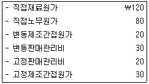
20×2년 초에 회사는 (주)한국으로부터 제품A 800단위를 단위당 ￦300에 구입하겠다는 특별주문을 받았다. (주)서울이 동 주문을 수락하면 단위당 변동판매관리비 중 ￦20이 발생하지 않으며, 기존시장에서의 판매량 300단위를 포기해야 한다. (주)서울이 특별주문 수량을 모두 수락할 경우 이익은 얼마나 증가하는가? (단, 재고는 없으며, 20×2년 원가구조는 20×1년과 동일함)
- ￦10,200
- ￦10,400
- ￦10,600
- ￦10,800
- ￦11,000
(정답률: 알수없음)
36. 서울특허법률사무소는 특허출원에 대한 법률서비스를 제공하려고 한다. 이 서비스의 손익분기점 매출액은 ￦15,000,000, 공헌이익률은 40%이다. 서울특허법률사무소가 동 서비스로부터 ￦2,000,000의 이익을 획득하기 위한 매출액은?
- ￦6,000,000
- ￦8,000,000
- ￦9,000,000
- ￦20,000,000
- ￦22,000,000
(정답률: 알수없음)
37. 20×1년에 설립된 (주)서울은 제1공정에서 원재료 1,000kg을 가공하여 중간제품A와 제품B를 생산한다. 제품B는 분리점에서 즉시 판매될 수 있으나, 중간제품A는 분리점에서 판매가치가 형성되어 있지 않기 때문에 제2공정에서 추가 가공하여 제품C로 판매한다. 제품별 생산 및 판매량과 kg당 판매가격은 다음과 같다.
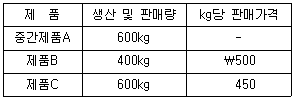
제1공정에서 발생한 결합원가는 ￦1,200,000이었고, 중간제품A를 제품C로 가공하는데 추가된 원가는 ￦170,000이었다. 회사가 결합원가를 순실현가치에 비례하여 제품에 배부하는 경우, 제품B와 제품C에 배부되는 총제조원가는? (순서대로 제품B, 제품C)
- ￦400,000, ￦800,000
- ￦400,000, ￦970,000
- ￦570,000, ￦800,000
- ￦800,000, ￦570,000
- ￦870,000, ￦400,000
(정답률: 알수없음)
38. (주)서울은 기계A나 기계B를 구입하여 신형자전거를 생산하려고 한다. 신형자전거가 생산되면 구매자의 선호에 따라 히트상품이 될 수도 있고 보통상품이 될 수도 있다. 각 상황에 따라 예상되는 이익은 다음과 같다.
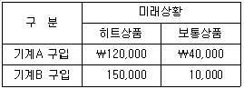
신형자전거가 히트상품이 될 확률이 40%이며 보통상품이 될 확률은 60%라고 한다. 다음 중 옳지 않은 것은?
- 기계A를 구입하는 대안의 기대이익은 ￦72,000이다.
- 기계B를 구입하고 신형자전거가 보통상품이 될 경우 조건부 손실(conditional loss)은 ￦30,000이다.
- 각 상황에 대해 80% 정확도를 가진 보고서가 있다면, 이 보고서는 정보로서의 가치가 있다.
- 각 상황에 대해 100% 정확한 예측을 하는 보고서가 있을 때, 이 보고서의 최대 구입가격은 ￦12,000이다.
- 조건부 손실의 기대값을 최소화하는 대안은 기계B를 구입하는 것이다.
(정답률: 알수없음)
39. 다음은 상품매매업을 영위하는 (주)서울의 20×1년 예산자료 중, 1분기의 매입 및 매출 추정액에 관한 자료이다.
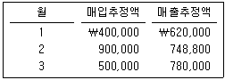
(주)서울의 20×1년 3월초 예상되는 현금보유액은 ￦50,000이다. 매출채권은 당월에 70%, 다음 달에 25%를 회수하고, 나머지는 회수하지 못할 것으로 예상된다. 매입채무는 매입한 달에 60%를 지급하는데 그 지급액의 2%는 현금할인 혜택을 받으며, 나머지는 다음 달에 모두 지급한다. 3월 중에 일반경비로 ￦200,000을 현금지출 할 예정이다. (주)서울이 매월 말 현금 ￦50,000을 보유하고 있어야 한다면, 3월에 추가로 조달해야 할 현금은 얼마로 추정되는가?
- ￦70,800
- ￦80,800
- ￦90,800
- ￦110,800
- ￦120,800
(정답률: 알수없음)
40. (주)서울은 단일 제품을 생산하고 있으며 20×1년 재공품에 관한 자료는 다음과 같다.
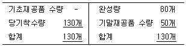
기말재공품의 가공원가 완성도는 40%이다. (주)서울은 당기에 직접노무시간 660시간을 투입하였다. 회사의 제품 단위당 표준직접노무시간은 6시간이고, 표준임률은 ￦3,000이다. 당기에 실제로 발생된 직접노무원가가 ￦2,100,000이었다면, 직접노무원가의 능률차이는?
- ￦120,000 불리
- ￦180,000 불리
- ￦120,000 유리
- ￦180,000 유리
- ￦540,000 불리
(정답률: 알수없음)
2과목: 회계학
41. 국토의 계획 및 이용에 관한 법령상 지방자치단체의 의견청취에 관한 설명으로 옳지 않은 것은?
- 시ㆍ도지사, 시장 또는 군수는 광역도시계획을 수립하거나 변경하려면 미리 관계 시ㆍ도, 시 또는 군의 의회와 관계 시장 또는 군수의 의견을 들어야 한다.
- 광역도시계획이 수립되는 시ㆍ도, 시 또는 군의 의회와 관계 시장 또는 군수는 특별한 사유가 없으면 30일 이내에 시ㆍ도지사, 시장 또는 군수에게 의견을 제시하여야 한다.
- 시장은 도시기본계획을 수립하거나 변경하려면 미리 그 시의회의 의견을 들어야 한다.
- 시장은 도시기본계획을 변경하려면 미리 공청회를 열어 주민과 관계 전문가 등으로부터 의견을 들어야 하며, 공청회에서 제시된 의견이 타당하다고 인정하면 도시기본계획에 반영하여야 한다.
- 시장 또는 군수가 녹지지역의 지정에 관한 도시관리계획을 입안할 경우에는 해당 지방의회의 의견청취를 생략할 수 있다.
(정답률: 알수없음)
42. 국토의 계획 및 이용에 관한 법령상 광역도시계획에 관한 설명으로 옳은 것은?
- 중앙행정기관의 장, 특별시장ㆍ광역시장ㆍ도지사ㆍ특별자치도지사, 시장 또는 군수는 국토해양부장관이나 도지사에게 광역계획권의 변경을 요청할 수 있다.
- 광역계획권이 둘 이상의 시ㆍ도의 관할 구역에 걸쳐 있는 경우에는 관계 시ㆍ도지사가 협의하여 광역계획권을 지정한다.
- 광역계획권이 같은 도의 관할 구역에 속하여 있는 경우에는 도지사가 광역도시계획을 수립하여야 한다.
- 도지사가 광역계획권을 지정하거나 변경하려면 국토해양부장관과의 협의와 관계 시ㆍ도, 시 또는 군의회의 의견을 들은 후 지방도시계획위원회의 심의를 거쳐야 한다.
- 광역도시계획을 공동으로 수립하는 시ㆍ도지사는 그 내용에 관하여 서로 협의가 되지 아니하면 공동으로 국토해양부장관에게 조정을 신청하여야 한다.
(정답률: 알수없음)
43. 국토의 계획 및 이용에 관한 법령상 도시관리계획에 관한 설명으로 옳지 않은 것은?
- 지구단위계획구역의 지정 또는 변경에 관한 계획은 도시관리계획에 속한다.
- 시ㆍ도지사는 도시관리계획을 결정하려면 관계 행정기관의 장과 미리 협의하여야 한다.
- 도시관리계획 입안권자는 도시관리계획을 조속히 입안하여야 할 필요가 있다고 인정되면 광역도시계획을 수립할 때에 도시관리계획을 입안할 수 있다.
- 도시관리계획 결정은 고시가 된 날부터 5일 후에 그 효력이 발생한다.
- 시가화조정구역의 지정에 관한 도시관리계획 결정 당시 이미 허가를 받아 사업이나 공사에 착수한 자는 별도의 신고 없이 그 사업이나 공사를 계속할 수 있다.
(정답률: 알수없음)
44. 국토의 계획 및 이용에 관한 법령상 공공시설의 귀속에 관한 설명으로 옳지 않은 것은?
- 개발행위허가를 받은 자가 행정청인 경우 개발행위허가를 받은 자는 개발행위가 끝나 준공검사를 마친 때에는 해당 시설의 관리청에 공공시설의 종류와 토지의 세목을 통지하여야 한다.
- 개발행위허가를 받은 행정청이 새로 공공시설을 설치한 경우 당해 공공시설은 그 시설을 관리할 관리청에 무상으로 귀속된다.
- 개발행위허가를 받은 행정청에게 종래의 공공시설의 소유권이 무상으로 귀속된 경우 당해 행정청은 당해 공공시설의 처분으로 인한 수익금을 도시계획사업의 목적으로만 사용하여야 한다.
- 개발행위허가를 받은 자가 행정청이 아닌 경우 개발행위허가를 받은 자가 새로 설치한 공공시설은 그 시설을 관리할 관리청에 무상으로 귀속된다.
- 개발행위허가를 받은 자가 행정청이 아닌 경우 개발행위로 용도가 폐지되는 공공시설은 「국유재산법」과 「공유재산 및 물품 관리법」에도 불구하고 새로 설치한 공공시설의 설치비용에 상당하는 범위에서 개발행위허가를 받은 자에게 무상으로 양도되어야 한다.
(정답률: 알수없음)
45. 국토의 계획 및 이용에 관한 법령상 지형도면에 관한 설명으로 옳지 않은 것은?
- 군수는 지형도면을 작성하면 도지사의 승인을 받아야 한다.
- 국토해양부장관이나 도지사는 도시관리계획을 직접 입안한 경우 관계 특별시장ㆍ광역시장, 시장 또는 군수의 의견을 들어 직접 지형도면을 작성할 수 있다.
- 자연녹지지역안의 지목이 대(垈)인 지역에 대해 축척 3천분의 1의 지형도를 사용하여 도시관리계획 결정을 고시한 경우에는 지형도면을 따로 작성할 필요가 없다.
- 지형도면의 고시를 해야함에도 불구하고 도시관리계획 결정의 고시일로부터 2년이 되는 날까지 지형도면의 고시가 없는 경우에는 그 2년이 되는 날의 다음 날에 그 도시관리계획 결정은 효력을 잃는다.
- 판례에 따르면, 도시계획결정고시의 도면만으로는 도시계획결정의 구체적인 범위나 개별토지의 도시계획선을 특정할 수 없으므로 도시계획결정 효력의 구체적ㆍ개별적인 범위는 지형도면고시에 의하여 확정된다.
(정답률: 알수없음)
46. 국토의 계획 및 이용에 관한 법령상 기반시설에 관한 설명으로 옳지 않은 것은?
- 국가계획으로 설치ㆍ관리하는 광역시설은 그 광역시설의 설치ㆍ관리를 사업종목으로 하여 다른 법률에 따라 설립된 법인이 관리할 수 있다.
- 교통시설에 해당하는 자동차검사시설과 유통ㆍ공급시설에 해당하는 공동구는 기반시설에 속한다.
- 특별시장ㆍ광역시장ㆍ시장 또는 군수는 개발행위가 집중되어 해당 지역의 계획적 관리가 필요하다고 인정하는 지역을 기반시설부담구역으로 지정할 수 있다.
- 상업지역에서 지상ㆍ지하 등에 공공공지ㆍ열공급설비등을 설치하려고 할 경우 그 시설의 종류ㆍ명칭ㆍ위치ㆍ규모 등을 미리 도시관리계획으로 결정하여야 한다.
- 국가 또는 지방자치단체는 행정청이 아닌 자가 시행하는 도시계획시설사업에 드는 비용의 일부를 보조ㆍ융자할 수 있으며, 이때 해당지역의 기반시설이 인근지역에 비하여 부족한 지역을 우선 지원할 수 있다.
(정답률: 알수없음)
47. 주거지역에 인접한 상업지역에 마권장외발매소 등이 입지하여 주거환경을 해치는 것을 방지하기 위한 국토의 계획 및 이용에 관한 법령상의 수단으로 적합한 것은?
- 시설보호지구 지정
- 개발진흥지구 지정
- 계획관리지역 지정
- 제1종 지구단위계획 결정 또는 변경결정
- 제2종 지구단위계획 결정 또는 변경결정
(정답률: 알수없음)
48. 국토의 계획 및 이용에 관한 법령상 지구단위계획의 지정에 관한 설명으로 옳지 않은 것은?
- 「도시개발법」에 따라 지정된 도시개발구역의 일부는 제1종 지구단위계획구역으로 지정될 수 있다.
- 「택지개발촉진법」에 따라 지정된 택지개발예정지구의 전부는 제1종 지구단위계획구역으로 지정될 수 있다.
- 「관광진흥법」에 따라 지정된 관광특구의 전부 는 제1종 지구단위계획구역으로 지정될 수 있다.
- 개발제한구역에서 해제되는 구역 중 계획적인 관리가 필요한 지역은 제1종 지구단위계획구역으로 지정될 수 있다.
- 계획관리지역으로서 주거개발진흥지구로 지정된 지역은 제1종 지구단위계획구역으로 지정될 수 있다.
(정답률: 알수없음)
49. 국토의 계획 및 이용에 관한 법령상 지구단위계획구역으로 지정하려는 구역에서 도시관리계획 입안시 토지적성평가가 면제될 수 있는 경우가 아닌 것은?
- 도시관리계획의 입안 내용이 개발용도의 용도지역 상호간의 변경인 경우
- 당해 지구단위계획구역안의 나대지면적이 구역면적의 2퍼센트에 미달하는 경우
- 당해 지구단위계획구역이 상업지역과 상업지역에 연접한 지역에 위치하는 경우
- 주거지역ㆍ상업지역 또는 공업지역에 도시관리계획을 입안하는 경우
- 도시계획시설부지에서 도시관리계획을 입안하는 경우
(정답률: 알수없음)
50. 국토의 계획 및 이용에 관한 법령상 개발밀도관리구역에 관한 설명으로 옳지 않은 것은?
- 서울특별시장이 서울특별시 중구에서 개발밀도관리구역을 지정하려면 서울특별시 도시계획위원회의 심의를 거쳐야 한다.
- 개발밀도관리구역안에서 개발행위를 하려는 자는 기반시설의 설치나 그에 필요한 용지의 확보 등에 관한 계획서를 개발행위허가권자에게 제출하여야 한다.
- 주거ㆍ상업 또는 공업지역에서의 개발행위로 기반시설(도시계획시설을 포함한다)의 처리ㆍ공급 또는 수용능력이 부족할 것으로 예상되는 지역 중 기반시설의 설치가 곤란한 지역은 개발밀도관리구역으로 지정될 수 있다.
- 용적률의 최대한도가 1천100퍼센트인 상업지역이고 개발밀도관리구역으로 지정된 지역에서는 550퍼센트의 범위에서 용적률을 강화하여 적용한다.
- 특별시장ㆍ광역시장ㆍ시장 또는 군수는 개발밀도관리구역을 지정하거나 변경한 경우에는 개발밀도관리구역의 명칭 및 범위, 건폐율 또는 용적률의 강화범위를 지방자치단체의 공보에 게재하여 고시하여야 한다.
(정답률: 알수없음)
51. 국토의 계획 및 이용에 관한 법령상 용도지역ㆍ지구ㆍ구역에 관한 설명으로 옳지 않은 것은?
- 용도지역ㆍ지구ㆍ구역의 변경은 도시관리계획으로 결정된다.
- 용도지역은 서로 중복되어 지정될 수 없으나, 용도지구는 서로 중복되어 지정될 수 있다.
- 상업지역은 중심상업지역, 일반상업지역, 근린상업지역과 유통상업지역으로 세분된다.
- 시가화조정구역내에서 시가화조정구역의 지정목적달성에 지장이 없다고 인정되는 도시계획사업의 시행에 관한 요청권은 당해 지방자치단체장에게 부여되어 있다.
- 특별시ㆍ광역시ㆍ시 또는 군의 도시계획조례로 용도지역별 용적률을 정함에 있어서 필요한 경우에는 당해 지방자치단체의 관할구역을 세분하여 용적률을 달리 정할 수 있다.
(정답률: 알수없음)
52. 국토의 계획 및 이용에 관한 법령상 개발행위허가에 관한 설명으로 옳지 않은 것은?
- 폐기물처리 사업자가 자연녹지지역안의 나대지에 폐지를 1개월 이상 쌓아 놓는 행위는 개발행위허가 대상이 아니다.
- 지구단위계획구역으로 지정된 지역으로서 도시관리계획상 특히 필요하다고 인정되는 지역에 대하여는 최고 5년 이내의 기간 동안 개발행위허가를 제한 할 수 있다.
- 개발행위허가권자는 공공시설의 귀속에 관한 사항이 포함된 개발행위허가를 하려면 미리 해당 공공시설이 속한 관리청의 의견을 들어야 한다.
- 특별시장ㆍ광역시장ㆍ시장 또는 군수는 개발행위허가를 하려면 해당 지역에서 시행되는 도시계획사업 시행자의 의견을 들어야 한다.
- 재해복구나 재난수습을 위한 응급조치는 개발행위허가를 받지 아니하고 할 수 있으나 1개월 이내에 특별시장ㆍ광역시장ㆍ시장 또는 군수에게 신고하여야 한다.
(정답률: 알수없음)
53. 국토의 계획 및 이용에 관한 법령상 도시계획시설사업 시행에 관한 설명으로 옳지 않은 것은?
- 특별시장ㆍ광역시장ㆍ시장 또는 군수는 도시계획시설에 대하여 도시계획시설 결정의 고시일부터 2년 이내에 대통령령으로 정하는 바에 따라 단계별 집행계획을 수립하여야 한다.
- 도시계획시설사업이 둘 이상의 특별시ㆍ광역시ㆍ시 또는 군의 관할 구역에 걸쳐 시행되게 되는 경우에는 관계 특별시장ㆍ광역시장ㆍ시장 또는 군수가 서로 협의하여 시행자를 정한다.
- 군수가 관할구역내에서 도시계획시설사업을 시행하는 경우에는 그 도시계획시설사업에 관한 실시계획을 작성한 후 국토해양부장관의 인가를 받아야 한다.
- 특별시장ㆍ광역시장ㆍ시장 또는 군수는 실시계획의 인가를 받지 아니하고 도시계획시설사업을 하거나 그 인가 내용과 다르게 도시계획시설사업을 하는 자에게 그 토지의 원상회복을 명할 수 있다.
- 국토해양부장관, 시ㆍ도지사 또는 대도시 시장은 실시계획을 작성한 경우에는 대통령령으로 정하는 바에 따라 그 내용을 고시하여야 한다.
(정답률: 알수없음)
54. 국토의 계획 및 이용에 관한 법령상 토지거래계약허가제도에 대한 설명으로 옳지 않은 것은? (다툼이 있으면 판례에 의함)
- 토지거래허가구역의 지정은 토지의 투기적인 거래가 성행하거나 지가가 급격히 상승하는 지역 등에 대해 국토해양부장관이 행한다.
- 행정청의 토지거래허가구역의 지정행위는 개인의 권리 내지 법률상의 이익을 구체적으로 규제하는 효과를 가져오게 하는 행정청의 처분에 해당하지 않는다.
- 토지거래허가제는 사유재산제도를 부정하는 것이 아니라 토지의 투기적 거래억제를 위한 것으로 헌법상의 비례원칙이나 과잉금지원칙에 반하지 아니한다는 것이 헌법재판소의 입장이다.
- 허가를 받지 않고 체결한 계약의 효력에 대해 판례는 확정적인 무효와 유동적인 무효로 구별하고 있다.
- 벌칙적용대상인 허가없이 토지등의 거래계약을 체결한 행위라 함은 처음부터 허가를 배제하거나 잠탈하는 내용의 계약을 체결하는 것을 의미한다.
(정답률: 알수없음)
55. 국토의 계획 및 이용에 관한 법령상 이행강제금과 관련하여 옳지 않은 것은?
- 토지거래계약허가를 받은 자가 허가받은 목적대로 토지를 이용하지 아니할 경우 이용의무의 이행명령을 담보하는 수단이 될 수 있다.
- 토지거래계약허가를 받아 휴게음식점을 취득하여 실제로 이용하는 자가 해당 건축물의 일부를 임대하는 경우에는 이행강제금의 부과대상이 아니다.
- 이행명령을 받은 자가 그 명령을 이행하더라도 명령을 이행하기 전에 이미 부과된 이행강제금은 징수하여야 한다.
- 부과권자는 시장ㆍ군수 또는 구청장이며 이행명령이 정하여진 기간 내에 이행되지 아니할 때 부과하게 된다.
- 최초의 이행명령이 있었던 날을 기준으로 하여 6개월에 한 번씩 그 이행명령이 이행될 때까지 반복하여 부과ㆍ징수할 수 있다.
(정답률: 알수없음)
56. 국토의 계획 및 이용에 관한 법령상 징역이나 벌금의 부과 대상이 아닌 자는?
- 법령상 필요한 허가를 받지 아니하고 개발행위를 한 자
- 기반시설설치비용을 면탈ㆍ경감할 목적으로 거짓 계약을 체결한 자
- 법령상 필요한 허가를 받지 아니하고 공동구를 점용하거나 사용한 자
- 법령상 필요한 도시관리계획의 결정이 없이 기반시설을 설치한 자
- 속임수나 그 밖의 부정한 방법으로 토지거래계약허가를 받은 자
(정답률: 알수없음)
57. 부동산 가격공시 및 감정평가에 관한 법령상 개별공시지가에 관한 설명으로 옳은 것은?
- 개별공시지가에 표준지 선정의 착오가 있음을 발견한 때에는 지체 없이 이를 정정하여야 한다.
- 표준지로 선정된 토지에 대해서도 별도로 개별공시지가를 결정ㆍ공시하여야 한다.
- 개별공시지가를 결정ㆍ공시하기 위하여 개별토지의 가격을 산정하고자 하는 경우에는 둘 이상의 감정평가업자에게 이를 의뢰하여야 한다.
- 개별공시지가를 결정ㆍ공시함에 있어 필요하다고 인정되는 때에는 토지소유자 그 밖의 이해관계인의 의견청취를 생략할 수 있다.
- 개별공시지가에 대한 이의신청은 그 결정ㆍ공시일부터 30일 이내에 국토해양부장관에게 하여야 한다.
(정답률: 알수없음)
58. 부동산 가격공시 및 감정평가에 관한 법령상 감정평가사에 대한 징계에 관한 설명으로 옳은 것은?
- 감정평가협회는 감정평가사징계위원회에 감정평가사에 대한 징계의결의 요구를 할 수 없다.
- 감정평가업자가 중과실로 잘못된 평가를 한 경우에도 고의가 없다면 징계의 대상이 되지 않는다.
- 감정평가사징계위원회의 의사정족수는 재적위원 과반수이고 의결정족수는 출석위원 3분의 2 이상이다.
- 감정평가사가 업무상 중대한 의무를 위반한 경우 감정평가사징계위원회의 의결에 따라 자격취소의 징계를 할 수 있다.
- 감정평가사에 대한 징계의결의 요구는 위반사유가 발생한 날부터 3년이 지난 때에는 할 수 없다.
(정답률: 알수없음)
59. 부동산 가격공시 및 감정평가에 관한 판례의 입장으로서 옳지 않은 것은?
- 감정평가서에는 평가원인을 구체적으로 특정하여 명시하여야 하는 동시에 각 요인별 참작 내용과 정도가 객관적으로 납득이 갈 수 있을 정도로 설명되어야 한다.
- 수용보상금의 증액을 구하는 소송에서 선행처분으로서 그 수용대상 토지 가격 산정의 기초가 된 비교표준지공시지가결정의 위법을 독립한 사유로 주장할 수 있다.
- 보상금의 증감에 관한 소송에 있어서 동일한 사실에 대하여 수개의 감정평가가 있고 그 중 어느 하나의 감정평가가 오류가 있음을 인정할 자료가 없는 이상 법원이 각 감정평가 중 어느 하나만을 채용하는 것은 그 자체로 위법하다.
- 개별공시지가는 당해 토지를 담보로 제공함에 있어 그 담보가치를 보장하는 등의 구속력을 가지는 것은 아니다.
- 개별공시지가의 결정이 관련 법령이 정하는 절차와 방법에 따라 이루어진 것이라면 그 공시지가가 감정가액이나 실제 거래가격을 초과한다고 하여 위법하게 되는 것은 아니다.
(정답률: 알수없음)
60. 부동산 가격공시 및 감정평가에 관한 법령상 감정평가에 관한 설명으로 옳은 것은?
- 국가가 토지등의 매입을 위하여 감정평가를 의뢰하고자 하는 경우에는 한국감정원에 의뢰하여야 한다.
- 금융기관이 대출과 관련하여 토지등의 감정평가를 의뢰하고자 하는 경우에는 감정평가법인에게 의뢰하여야 한다.
- 감정평가업자가 타인의 의뢰에 의하여 토지를 개별적으로 감정평가하는 경우에는 당해 토지와 유사한 이용가치를 가진 가장 근접한 지역의 개별공시지가를 기준으로 하여야 한다.
- 감정평가업자는 감정평가서의 원본과 관련서류를 그 교부일부터 10년 이상 보존하여야 한다.
- 감정평가업자가 과실로 평가 당시의 적정가격과 현저한 차이가 있게 감정평가를 하여 의뢰인에게 손해를 발생하게 한 때에는 그 손해를 배상할 책임이 있다.
(정답률: 알수없음)
61. 부동산 가격공시 및 감정평가에 관한 법령상 표준주택가격의 공시에 포함되어야 하는 사항만을 모두 고른 것은?
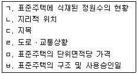
- ㄱ, ㄴ, ㄷ
- ㄴ, ㄷ, ㅁ
- ㄴ, ㄹ, ㅂ
- ㄴ, ㄷ, ㄹ, ㅂ
- ㄱ, ㄷ, ㄹ, ㅁ, ㅂ
(정답률: 알수없음)
62. 부동산 가격공시 및 감정평가에 관한 법령상 공동주택가격의 공시에 관한 설명으로 옳은 것은?
- 시장ㆍ군수 또는 구청장이 공동주택가격을 조사ㆍ산정하여 공시하여야 한다.
- 공동주택가격을 조사ㆍ산정하는 경우에는 둘 이상의 감정평가업자에게 이를 의뢰하여야 한다.
- 공동주택에 전세권이 설정되어 있는 경우 당해 전세권이 존재하지 아니하는 것으로 보고 적정가격을 조사하여야 한다.
- 공동주택가격은 매년 4월 30일을 공시기준일로 하여 산정ㆍ공시하여야 한다.
- 공동주택가격을 산정한 때에는 그 타당성에 대하여 감정평가업자의 검증을 받고 공동주택소유자등 이해관계인의 의견을 들어야 한다.
(정답률: 알수없음)
63. 부동산 가격공시 및 감정평가에 관한 법령상 감정평가사 자격취득에 있어 결격사유가 없는 자는?
- 미성년자
- 파산선고를 받고 3년이 경과한 자
- 금고 이상의 실형을 선고받고 그 집행이 종료된 날부터 2년이 경과한 자
- 감정평가사 자격이 취소된 후 2년이 경과한 자
- 금고 이상의 형의 선고유예를 받고 그 유예기간이 만료된 날부터 6개월이 경과한 자
(정답률: 알수없음)
64. 부동산 가격공시 및 감정평가에 관한 법령상 감정평가사의 업무에 해당하지 않는 것은?
- 토지등의 감정평가에 관한 타당성 조사
- 표준지의 적정가격의 조사ㆍ평가
- 법원의 경매를 위한 토지등의 감정평가
- 토지등의 이용 및 개발에 대한 정보의 제공
- 개별주택가격의 검증
(정답률: 알수없음)
65. 국유재산법령상 국유재산의 관리에 관한 설명으로 옳지 않은 것은?
- 기획재정부장관은 일반재산을 보존용재산으로 전환하여 관리할 수 있다.
- 행정재산이라도 판결에 따라 사권을 설정하는 것은 허용된다.
- 판결에 따라 취득하는 경우에는 사권이 설정된 재산이라도 국유재산으로 취득할 수 있다.
- 국가는 행정재산에 건물, 교량 등 구조물과 그 밖의 영구시설물을 축조할 수 있다.
- 총괄청이나 중앙관서의 장은 소유자 없는 부동산을 국유재산으로 취득한다.
(정답률: 알수없음)
66. 국유재산법령상 행정재산에 해당하지 않는 것은?
- 국가가 매수하여 공무원의 주거용으로 사용하는 건물
- 국가가 기부채납 받아 직접 사업용으로 사용하는 토지
- 정부기업이 그 기업에 종사하는 직원의 주거용으로 사용하는 국가소유의 건물
- 국가가 임차하여 직접 사무용으로 사용하는 건물
- 국가가 보존할 필요가 있다고 총괄청이 결정한 국가소유의 건물
(정답률: 알수없음)
67. 국유재산법령상 국유재산으로 기부채납을 받을 수 있는 경우는?
- 국가에 기부하려는 재산이 재산가액 대비 유지ㆍ보수 비용이 지나치게 많은 경우
- 기부자의 상속인에게 무상으로 사용허가하여 줄 것을 조건으로 하여 국가에 행정재산으로 기부하는 경우
- 기부하려는 재산이 국가에 이익이 없는 것으로 인정되는 경우
- 기부자의 사망 후 상속인에게 반환하여 줄 것을 조건으로 국가에 재산을 기부하는 경우
- 특정한 행정재산의 용도를 변경하여 줄 것을 조건으로 국가에 재산을 기부하는 경우
(정답률: 알수없음)
68. 국유재산법령상 국유재산에 관한 설명으로 옳지 않은 것은?
- 국유재산에 관한 사무에 종사하는 직원이 소관청의 허가를 받지 아니하고 자신이 처리하는 국유재산을 취득한 경우 이는 무효로 한다.
- 국유재산의 관리ㆍ처분에 관한 소관 중앙관서의 장이 없는 경우에는 총괄청이 이를 지정한다.
- 등기가 필요한 국유재산의 경우 그 권리자의 명의는 총괄청의 명칭으로 한다.
- 행정재산은 시효취득의 대상이 되지 아니한다.
- 기부채납을 조건으로 하는 경우 사인이라도 국유하천에 교량 등 영구시설물을 축조할 수 있다.
(정답률: 알수없음)
69. 건축법령상 공사감리자의 업무내용으로 부적합한 것은?
- 공정표의 검토
- 허가권자에 대한 위법건축공사보고서의 작성 및 제출
- 허가권자에 대한 감리보고서의 작성 및 제출
- 설계변경의 적정여부의 검토ㆍ확인
- 건축법령에 의한 명령이나 처분 위반사항의 시정요청
(정답률: 알수없음)
70. 건축법령상 공개 공지의 확보 등에 관한 설명으로 옳지 않은 것은?
- 공개 공지의 면적은 대지면적의 100분의 10 이하의 범위에서 건축조례로 정한다.
- 문화 및 집회시설로서 연면적의 합계가 3천 제곱미터 이상일 경우 공개 공지를 확보하여야 한다.
- 공개 공지를 확보하는 경우 용적률은 해당 지역에 적용하는 용적률의 1.2배 이하의 범위 내에서 건축조례로 정하여 완화할 수 있다.
- 공개 공지에는 연간 60일 이내의 기간 동안 건축조례로 정하는 바에 따라 주민을 위한 문화행사를 열거나 판촉활동을 할 수 있다.
- 공개 공지에는 환경친화적으로 편리하게 이용할 수 있도록 건축조례로 정하는 시설을 설치하여야 한다.
(정답률: 알수없음)
71. 건축법령상 건축물의 높이제한에 관한 설명으로 옳지 않은 것은?
- 건축물의 높이제한은 주로 건축물의 안전 확보, 일조, 통풍, 채광 등 위생적이고 쾌적한 주거환경의 확보 및 도시미관 유지 등을 도모하기 위한 것이다.
- 건축법상 일조권의 확보를 위한 건축물의 높이를 제한하는 지역은 원칙적으로 전용주거지역, 일반주거지역 및 준주거지역이다.
- 최고 높이가 정하여지지 않은 가로구역의 경우 건축물의 각 부분의 높이는 원칙적으로 그 부분으로부터 전면도로의 반대쪽 경계선까지의 수평거리의 1.5배를 넘을 수 없다.
- 허가권자는 같은 가로구역에서 건축물의 용도 및 형태에 따라 건축물의 높이를 다르게 정할 수 있다.
- 특별자치도지사 또는 시장ㆍ군수ㆍ구청장은 필요하다고 인정하는 경우 가로구역의 최고 높이를 대통령령이 정하는 바에 따라 건축위원회의 심의를 거쳐 완화하여 적용할 수 있다.
(정답률: 알수없음)
72. 건축면적이 560m2이고 높이 28m인 건축물의 옥상에 좌측에는 수평투영면적이 63m2이고 높이 9m로 된 장식탑을 세우고, 우측에는 수평투영면적이 42m2이고 높이 14m인 옥탑을 설치하였을 경우, 이 건축물의 건축법령상의 높이는?
- 28m
- 30m
- 37m
- 42m
- 51m
(정답률: 알수없음)
73. 측량ㆍ수로조사 및 지적에 관한 법령상 대한지적공사의 업무범위에 속하지 않는 사업은?
- 지적재조사사업의 수행
- 지적제도 및 지적측량에 관한 외국기술의 도입과 국외 진출사업 및 국제교류협력
- 지적제도 및 지적측량에 관한 연구ㆍ교육 등 지원사업
- 지적측량성과 검사
- 지적전산자료를 활용한 정보화사업
(정답률: 알수없음)
74. 측량ㆍ수로조사 및 지적에 관한 법령상 토지대장과 지적도에 공통적으로 등록하여야 하는 항목으로 옳지 않은 것은?
- 면적
- 토지의 소재
- 지번
- 지목
- 도면의 축척
(정답률: 알수없음)
75. 측량ㆍ수로조사 및 지적에 관한 법령상 지목에 관한 설명으로 옳지 않은 것은?
- 물을 상시적으로 직접 이용하여 벼ㆍ연(蓮)ㆍ미나리 등의 식물을 주로 재배하는 토지는 '답'이다.
- 자연의 유수(流水)가 있거나 있을 것으로 예상되는 토지는 '유지(溜池)'이다.
- 종교용지인 토지에 있는 유적ㆍ고적ㆍ기념물 등을 보호하기 위하여 구획된 토지는 '사적지'가 아니다.
- 육상에 인공으로 조성된 수산생물의 번식 또는 양식을 위한 시설을 갖춘 부지와 이에 접속된 부속시설물의 부지는 '양어장'이다.
- 산림 및 원야(原野)를 이루고 있는 수림지(樹林地)ㆍ죽림지 등의 토지는 '임야'이다.
(정답률: 알수없음)
76. 측량ㆍ수로조사 및 지적에 관한 법령상 지적소관청이 직권으로 조사ㆍ측량하여 지적공부의 등록사항을 정정할 수 없는 경우는?
- 지적측량 적부심사에 대한 중앙지적위원회의 의결서 사본을 받은 경우
- 지적도 및 임야도에 등록된 필지의 면적 및 경계의 위치가 잘못된 경우
- 지적공부의 작성 당시 잘못 정리된 경우
- 지적측량성과와 다르게 정리된 경우
- 평방미터 단위로 면적 환산이 잘못된 경우
(정답률: 알수없음)
77. 다음 중 등기대상이 될 수 없는 것은?
- 구분건물의 전유부분
- 집합건물의 공용부분 중 구분건물 또는 독립건물로서의 구조를 가지는 부분
- 구분건물의 규약상 공용부분
- 구분건물의 부속건물
- 구분건물의 구조상 공용부분
(정답률: 알수없음)
78. 부동산등기법령상 부기등기로 하는 것이 아닌 것은?
- 환매특약의 등기
- 저당권에 대한 권리질권의 등기
- 등기명의인 표시의 변경등기
- 등기상 이해관계있는 제3자의 승낙서가 첨부된 권리변경등기
- 등기상 이해관계인이 없는 경우의 등기사항 전부의 말소회복등기
(정답률: 알수없음)
79. 부동산등기법령상 토지 및 건물의 등기에 관한 설명으로 옳은 것은?
- 토지 면적의 증감 또는 지목의 변경이 있을 때에는 그 토지 소유권의 등기명의인은 1주일 이내에 그 등기를 신청하여야 한다.
- 판결 또는 그 밖의 시ㆍ구ㆍ읍ㆍ면의 장의 서면에 의하여 자기의 소유권을 증명하는 자는 미등기건물의 소유권보존등기를 신청할 수 있다.
- 토지수용으로 인한 소유권이전등기는 토지소유자와 기업자가 공동으로 신청하여야 한다.
- 존재하지 아니하는 건물에 대한 등기가 있는 경우에는 등기관이 직권으로 멸실등기를 하여야 한다.
- 여러 개의 부동산에 관한 권리를 목적으로 하는 저당권의 설정등기를 신청하는 경우에 부동산이 3개 이상인 때에는 신청서에 공동담보목록을 첨부하여야 한다.
(정답률: 알수없음)
80. 부동산등기법령상 등기에 관한 설명으로 옳지 않은 것은?
- 표제부의 등기는 이른바 사실의 등기이다.
- 미등기의 부동산에 대하여 처음으로 행하여지는 소유자의 등기는 보존등기이다.
- 어떤 등기가 행하여진 후 등기된 사항에 후발적 변경이 있어서 이를 바로잡기 위한 등기는 경정등기이다.
- 원시적 또는 후발적인 원인으로 등기와 실체관계의 전부가 부합하지 않을 경우에 이를 시정하기 위하여 등기내용의 전부를 소멸시키는 등기는 말소등기이다.
- 행정구역 또는 그 명칭이 변경되었을 때에는 등기부에 적은 행정구역 또는 그 명칭은 변경된 것으로 본다.
(정답률: 알수없음)